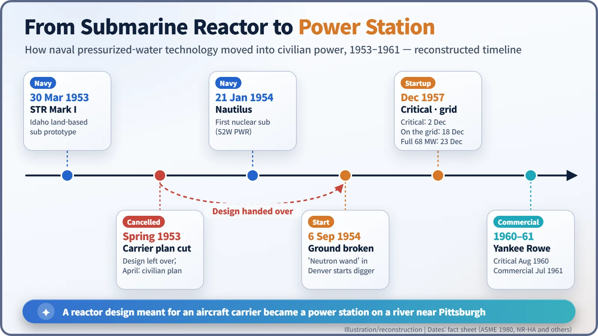
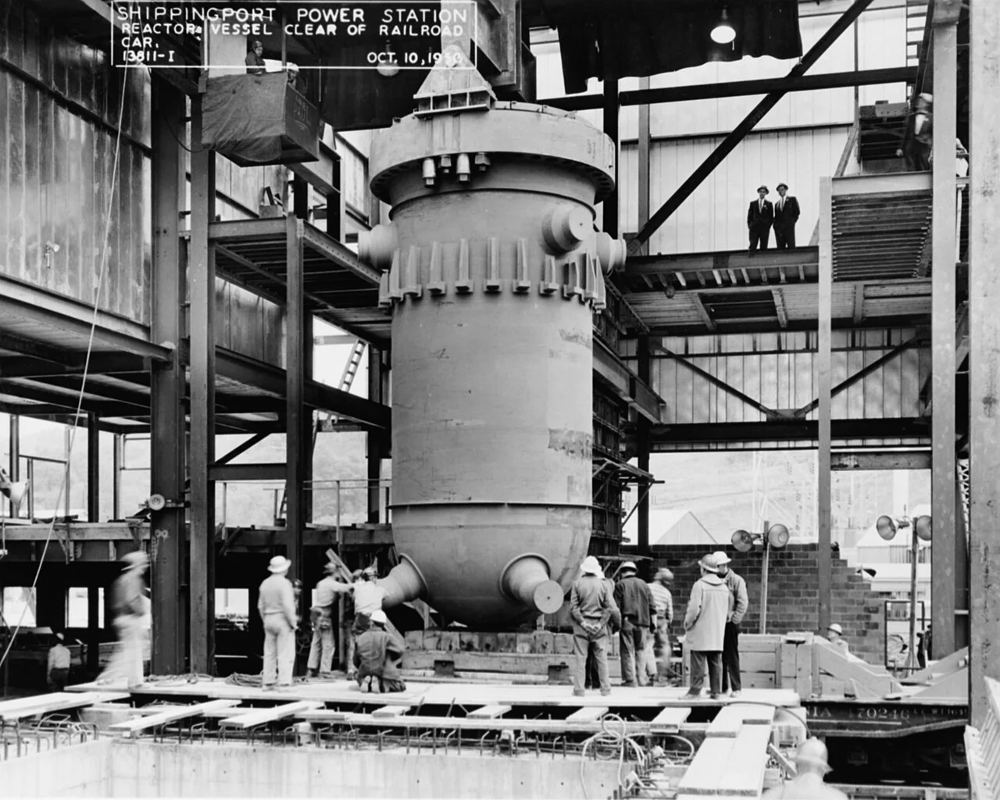
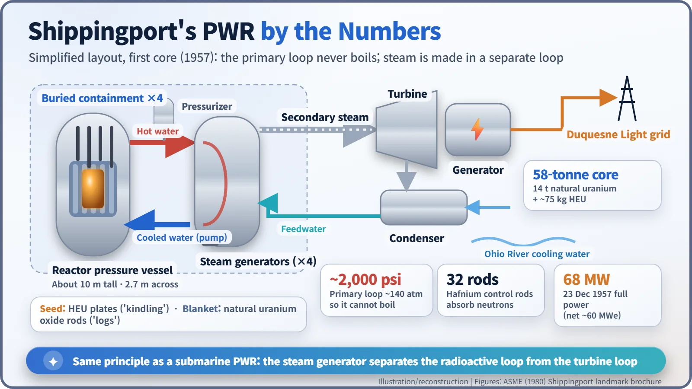
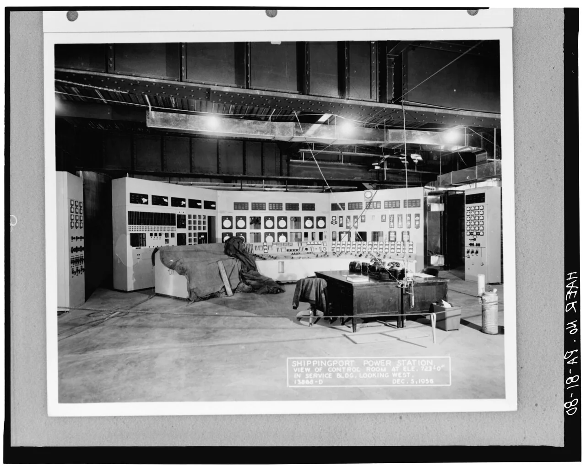
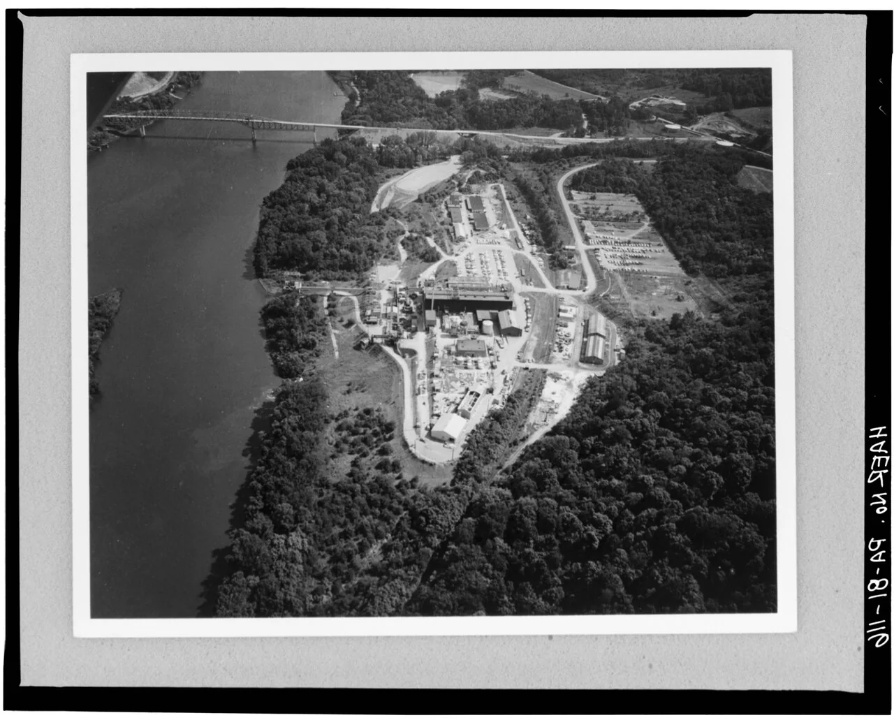

Nuclear History · 180
The President's "Neutron Wand" — Shippingport, America's First Full-Scale Nuclear Plant Built Only for Peaceful Power (1957)
Started by a wave of a wand in Denver, the pressurized water reactor on the Ohio River went critical on 2 December 1957 and became the eldest sibling of today's PWR fleet.
Shippingport, on the Ohio River near Pittsburgh, was the first full-scale nuclear power station built solely for peaceful electricity. Its pressurized water reactor grew out of a cancelled aircraft-carrier design, went critical on 2 December 1957 and reached 68 MW on 23 December. After 25 years of operation it was dismantled, with the work completed in December 1989.
A wave of the wand in Denver
Labor Day, Monday 6 September 1954. In a television studio of station KOA in Denver, Colorado, President Dwight D. Eisenhower (1890–1969) finished a short speech and picked up a slim rod. He passed this "neutron wand" over a neutron counter, and the counter flashed an electronic signal 1,200 miles (about 1,900 km) east to Shippingport, a small village on the Ohio River in Pennsylvania. There an unmanned earth-moving loader rolled forward and scooped up the first bucket of soil. About 1,400 guests at the site rose to their feet and applauded. America's first full-scale nuclear power station had just been started by remote control. [1] [2]
A reactor meant for an aircraft carrier
The plant began life as a warship part. In the early 1950s Westinghouse's Bettis Atomic Power Laboratory was designing a large light-water reactor for a proposed aircraft carrier, under the technical direction of the Atomic Energy Commission's (AEC) Division of Naval Reactors. In 1953 the government cancelled the carrier, and the design was left without a ship. [1]
The timing mattered. That December, Eisenhower gave his "Atoms for Peace" speech at the United Nations, and the Soviet Union and Britain were racing towards nuclear electricity of their own. In April 1953 the AEC had already proposed turning the carrier design into a civilian power reactor, and it now invited electric utilities to bid. Duquesne Light Company of Pittsburgh won by offering the site, the turbine generator and $5 million towards light-water reactor research. The arrangement was a partnership: the government owned the reactor, the utility owned the equipment that turned its steam into electricity. Overall responsibility went to Hyman G. Rickover (1900–1986), the officer behind the submarine Nautilus. [1] [3]
One story often told about the groundbreaking concerns Rickover's dread of a live broadcast going wrong. If the driverless loader's blade dug in and stalled, the nation would be watching. According to a participant's memoir, he had two rails buried six inches under the soil so the blade would simply ride along them. It is an anecdote, not a documented fact.

Electricity from a pressure-cooker principle
Shippingport was a pressurized water reactor (PWR). Water flowing through the reactor (the primary loop) was kept at about 2,000 psi, roughly 140 atmospheres, so it could become very hot without boiling, the same trick a pressure cooker plays. That water passed through four steam generators, handing its heat across metal tube walls to a separate body of water (the secondary loop), which boiled into steam for the turbine. The arrangement keeps water that may carry radioactive material away from the steam that drives the turbine. [1]
The first core, lowered into place in October 1957, weighed 58 tonnes. At its heart sat plates of highly enriched uranium, about 75 kg (165 lb), acting as the "seed" or kindling; around them, 14 tonnes of natural uranium formed the "blanket", like logs around a fire. Thirty-two hafnium control rods set the power level, and the reactor and its high-pressure piping were housed in four interconnected containment vessels buried in the ground. [1]


Pittsburgh's breakfast, unknowingly nuclear
At 4:30 a.m. on 2 December 1957 the control rods were raised to the point where the chain reaction sustained itself: Shippingport had gone critical. By coincidence it was exactly 15 years since the world's first reactor reached criticality in Chicago. Just after midnight on 18 December, engineers synchronized the generator with the Duquesne Light grid, and by 7 a.m. the plant was sending out more than 12,000 kW. As the commemorative brochure puts it, the people of Pittsburgh made their toast and brewed their coffee without knowing the atom was helping. On 23 December the reactor reached its full power of 68,000 kW; the plant's net electrical rating was about 60 MWe. [1] [3]

At the dedication on 26 May 1958, AEC chairman Lewis L. Strauss called it "the first large-scale power plant yet built to convert the energy within the atom exclusively to the peaceful service of man's need for electric power." [1]
So who really came "first"?
Nuclear power has several "firsts", depending on the yardstick. The first reactor electricity to light bulbs came from EBR-I in Idaho (1951). The first nuclear plant to feed a public grid was Obninsk in the Soviet Union (1954). The first commercial-scale station to open was Calder Hall in Britain (1956), which also produced plutonium for the military. Shippingport's place is the first full-scale plant built solely for peaceful electricity. Yet because the government owned the reactor and the plant doubled as a test facility, some sources give the title of first fully commercial American PWR to Yankee Rowe, which entered commercial operation in 1961.
| Yardstick | Plant | Year |
|---|---|---|
| First reactor electricity (light bulbs) | EBR-I, Idaho, USA | 1951 |
| First power to a public grid | Obninsk, USSR | 1954 |
| First commercial-scale station (also made military plutonium) | Calder Hall, UK | 1956 |
| First full-scale plant solely for peaceful power | Shippingport, USA | 1957 |
| First fully commercial US PWR (in some sources) | Yankee Rowe, USA | 1961 |
It was not cheap. Construction cost figures range from $72.5 million to $84 million depending on the source, and the cost per kilowatt was several times that of a conventional station. Even so, Duquesne's chairman Philip A. Fleger had called Shippingport "a university so to speak for the electric power industry", and it did become a training ground for key staff at nuclear plants around the world. [1] [4]
Twenty-five years, then the land handed back
Shippingport ran for 25 years with a succession of cores. A second core in 1965 raised output to 100,000 kW, and from 1977 the plant tested a light-water breeder core fuelled with thorium. Power operation ended on 1 October 1982, and the plant then became a model for decommissioning. Workers lifted out the reactor pressure vessel, which held almost all the remaining radioactivity, in one piece together with its neutron shield tank, and shipped it by barge to the Hanford site in Washington State for burial. The work was finished in December 1989, four months ahead of schedule and within budget, and the site was returned to the utility for unrestricted use. [3] [5] [6]

Most of the world's nuclear power reactors today are pressurized water reactors. Their eldest sibling was born in a submarine, nearly went to sea in an aircraft carrier, and settled on a riverbank near Pittsburgh. A wave of a wand in Denver was the first signal in that long family line.